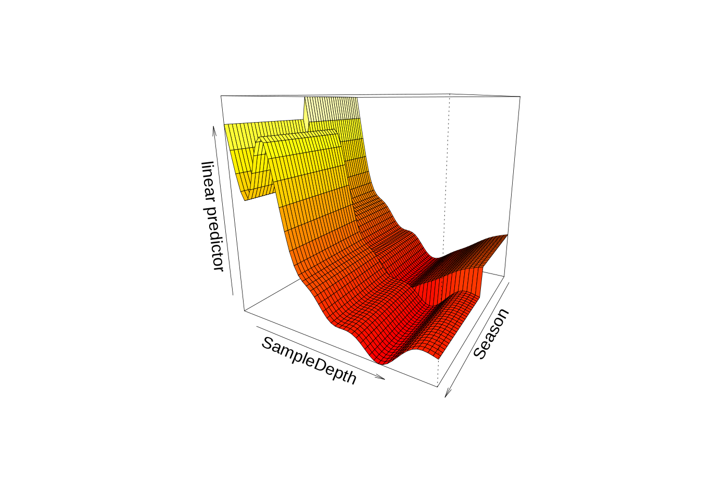
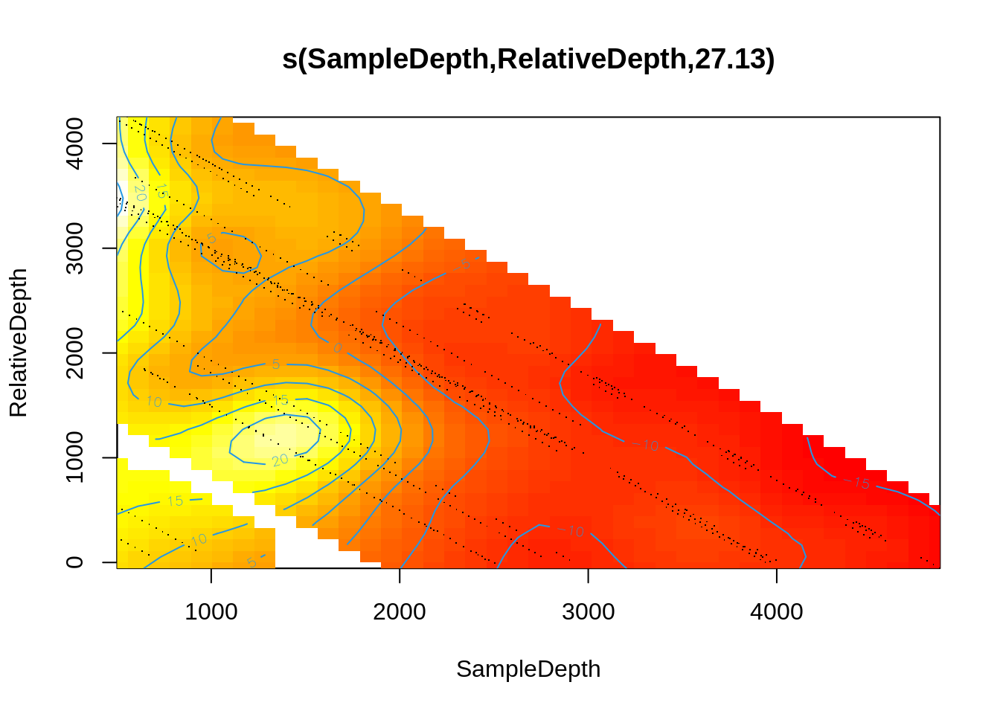
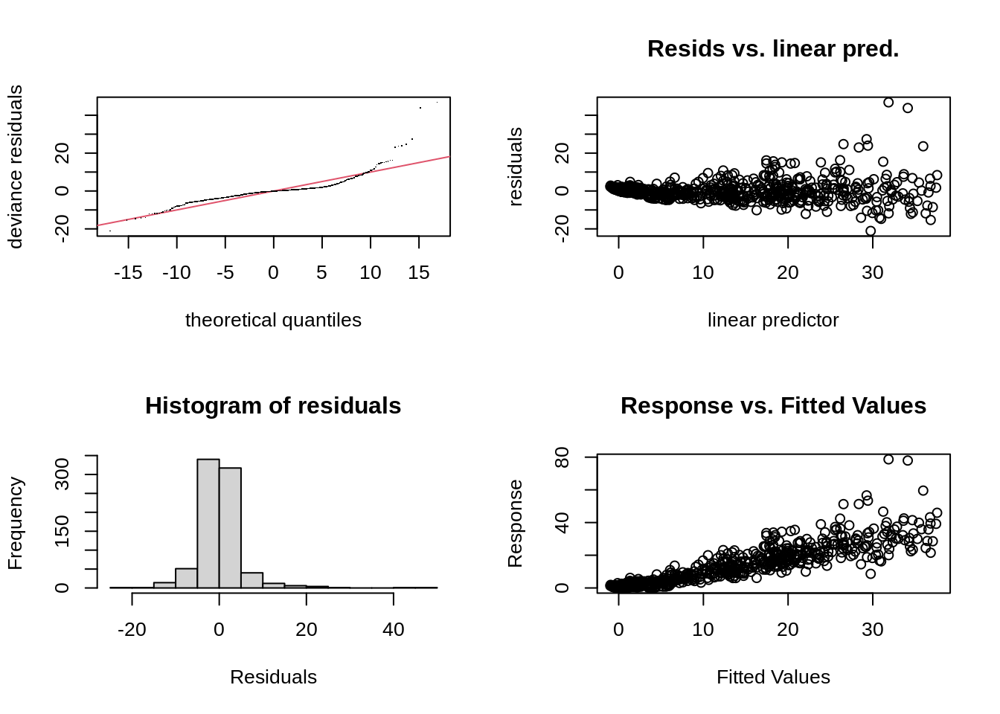

Chapter 7 GAM with interaction terms
There are two ways to include interactions between variables:
- For two smoothed variables, the syntax would be:
s(x1, x2) - For one smoothed variable and one linear variable (either factor or continuous), the syntax would use the
byarguments(x1, by = x2):- When
x2is a factor, you have a smooth term that vary between different levels ofx2; - When
x2is continuous, the linear effect ofx2varies smoothly withx1; - When
x2is a factor, the factor needs to be added as a main effect in the model.
- When
7.1 Interaction between smoothed and factor variables
We will examine interaction effects to determine whether the non-linear smoother s(SampleDepth) varies across different levels of Season.
factor_interact <- gam(Sources ~ Season + s(SampleDepth, by = Season) +
s(RelativeDepth), data = isit, method = "REML")
summary(factor_interact)$s.table## edf Ref.df F p-value
## s(SampleDepth):Season1 6.839386 7.552045 95.119422 0
## s(SampleDepth):Season2 8.744574 8.966290 154.474325 0
## s(RelativeDepth) 6.987223 8.055898 6.821074 0
The first two panels show the interaction effect of the SampleDepth smooth and each level of our factor variable, Season. Do you see a difference between the two smooth curves?
The plots show some differences between the shape of the smooth terms among the two levels of Season. The most notable difference is the peak in the second panel, which tells us that there is an effect of SampleDepth between 1000 and 2000 that is important in Season 2, but does not occur in Season 1. This hints that the interaction effect could be important to include in our model.
We can also plot the interaction effect in 3D on a single plot, using vis.gam().

> This plot can be rotated by changing the value of the theta argument.
To test our idea that this interaction is important, we will perform a model comparison using AIC to determine whether the interaction term improves our model’s performance.
## df AIC
## two_smooth_model 20.46960 5056.841
## factor_interact 26.99693 4878.631The AIC of our model with a factor interaction between the SampleDepth smooth and Season has a lower AIC score, which tells us this model performs better than two_smooth_model. Including this interaction seems to improve our model’s performance.
7.2 Interaction between smoothed variables
Next, we’ll look at the interactions between two smoothed terms, SampleDepth and RelativeDepth.
smooth_interact <- gam(Sources ~ Season + s(SampleDepth, RelativeDepth),
data = isit, method = "REML")
summary(smooth_interact)$s.table## edf Ref.df F p-value
## s(SampleDepth,RelativeDepth) 27.12521 28.77 93.91722 0In the previous section, we were able to visualise an interaction effect between a smooth and a factor term by plotting a different smooth function of SampleDepth for each level of Season.
In this model, we have two smoothed terms, which means that the effect of SampleDepth varies smoothly with RelativeDepth, and vice-versa. When we visualise this interaction, we instead get a gradient between two continuous smooth functions:

We can also plot this interaction on a 3D surface:
vis.gam(smooth_interact, view = c("SampleDepth", "RelativeDepth"),
theta = 50, n.grid = 50, lwd = 0.4)
> Remember, this plot can be rotated by changing the value of the theta argument.
You can change the colour of the 3D plot using the color argument. Try specifying color = "cm" in vis.gam() above, and check ?vis.gam for more color options.
The plots do illustrate a non-linear interaction effect, where Sources is lowest at high values of SampleDepth and RelativeDepth, but increases with RelativeDepth while SampleDepth is low.
So, there does seem to be an interaction effect between these smooth terms. Does including the interaction between s(SampleDepth) and s(RelativeDepth) improve our two_smooth_model model?
## df AIC
## two_smooth_model 20.46960 5056.841
## smooth_interact 30.33625 4943.890The model with the interaction between s(SampleDepth) and s(RelativeDepth) has a lower AIC, which means including this interaction improves our model’s performance, and our ability to understand the drivers of bioluminescence.
- Using other distributions for the response variable with the
familyargument (just as in a GLM), - Using different kinds of basis functions,
- Using different kinds of random effects to fit mixed effect models.
We will now go over these aspects.